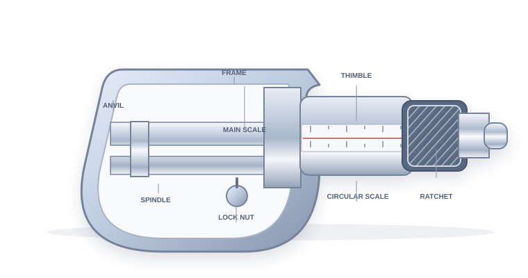

The pitch
The distance the spindle advances along its axis in one complete turn of the thimble. Here, a single turn moves it 0.5 mm.
Pitch = 0.5 mm per rotation
Step into the physics lab and discover the precision of a screw gauge. Make real measurements, understand every reading, and explore at your own pace.
How a little rotation unlocks incredibly fine measurement.
A screw gauge, also known as a micrometer, measures the tiny diameters of wires and the thickness of thin sheets with exceptional precision. Its secret is simple: a finely threaded screw turns circular motion into extraordinarily small, measurable linear movement.
When a spindle advances just half a millimetre in one full turn, even one of 50 careful divisions becomes useful.

A MICROMETER SCREW GAUGE ↗The distance the spindle advances along its axis in one complete turn of the thimble. Here, a single turn moves it 0.5 mm.
The smallest length your instrument can measure. Divide its pitch by the number of equal divisions on the circular scale.
Read the last mark still visible to the left of the thimble edge. This is your main scale reading, or MSR.
Count the circular division that lines up with the sleeve’s datum line. Multiply it by the least count for the CSR.
Always find and correct zero error before you record your final answer.
When the spindle gently touches the anvil, the datum line reads zero.
A positive reading at zero. The instrument overestimates, so subtract the error.
A negative reading at zero. The instrument underestimates, so add its magnitude.
Follow these steps for every accurate screw-gauge reading.
Choose an object, carefully close the spindle, and read the scales.
| TRIAL | OBJECT | MSR (mm) | CSR (div) | ZERO ERROR (mm) | CORRECTION (mm) | FINAL READING (mm) |
|---|---|---|---|---|---|---|
| ◎Your first measurement is waiting to happen. Insert an object and add your reading to begin. | ||||||
Review your trials, compare specimens, and take your findings with you.
| TRIAL | OBJECT | MSR (mm) | CSR (div) | ZERO ERROR (mm) | CORRECTION (mm) | FINAL READING (mm) |
|---|
Fifteen little questions, one brilliant way to check what you know.
Twenty useful viva questions. Take a guess, then tap to reveal the answer.
New to the virtual bench? Here's the entire experiment, step by step.
Pick any specimen, explore the controls, change the calibration, and make as many measurements as you'd like. Everything responds to you; nothing you do here can break the instrument.
Select an object from the specimen list. Choose Insert specimen to place it between the anvil and spindle. The spindle closes gently until it touches your sample.
Turn the ratchet buttons, drag the fine-adjustment slider, or use your mouse wheel over the instrument. The spindle and thimble move with every turn.
Watch the main-scale reading (MSR) and circular-scale reading (CSR) update live. Their combination, corrected for zero error, gives the specimen’s diameter.
Choose positive or negative zero error to see the instrument correct its reading. Positive error is subtracted; negative error adds its absolute value.
Press Add trial to save the current reading. Your observations, summary, and diameter graph update together as your experiment grows.
Download your observations as CSV, print a laboratory report, or capture an image of the instrument at any point in the experiment.
In a real lab, always use the ratchet to close the spindle gently. Overtightening can damage both your specimen and the accuracy of your instrument.
Trusted reference points for your next step in precision measurement.
This interactive experiment is a learning model. Actual laboratory instruments, calibration conventions, and object measurements can vary. Use your institution's instrument manual and lab instructions when carrying out real experiments.
For standard units, notation, and the International System of Units.
Visit the reference ↗A free, peer-reviewed introduction to measurement, significant figures, and experimental uncertainty.
Visit the reference ↗Practical context for making careful measurements and conducting safer experiments.
Visit the reference ↗For your instrument's actual least count, zero correction, calibration certificate, and approved laboratory procedure.
Review the procedure ↗